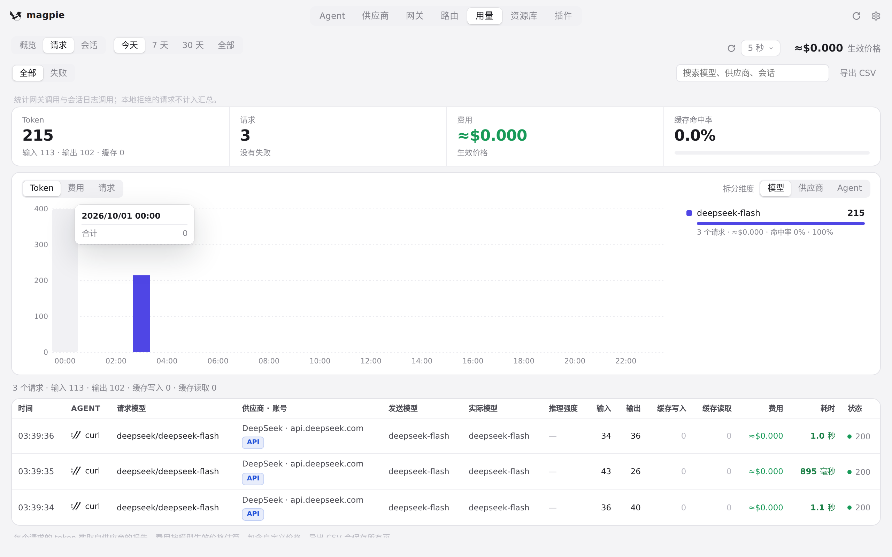
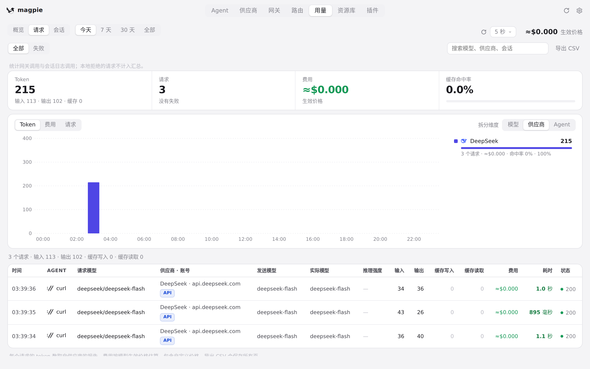
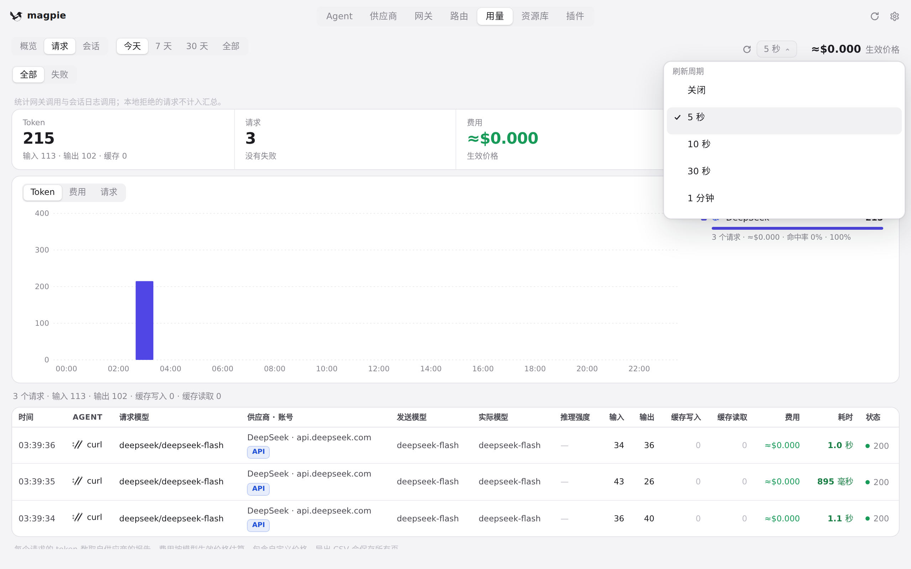
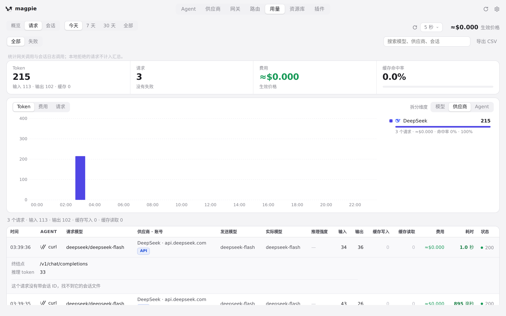
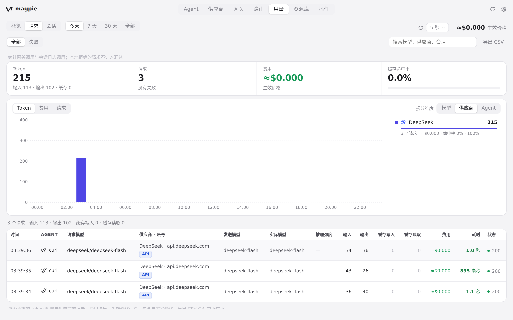
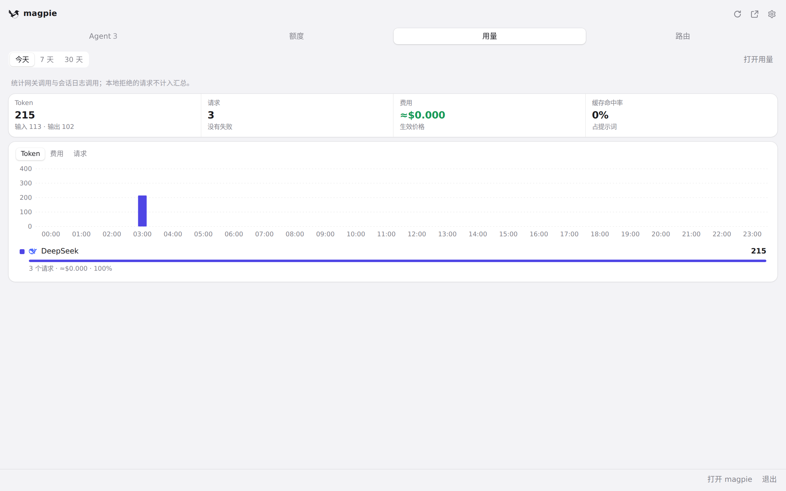
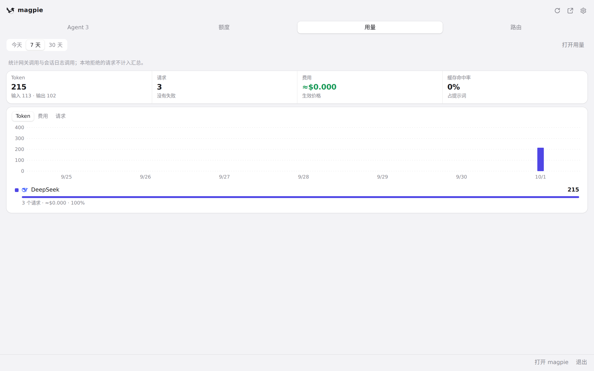

#239 界面预览
commit f94b30b · 回到 PR · 用量页的「请求」标签新增四项汇总、按 token/费用/请求数 × 模型/供应商/Agent 拆分的趋势图与排行、供应商筛选，以及可展开的请求详情（请求 ID、接口路径、错误原文、从 Agent 会话文件读到的输入输出），行上还有来源徽标与耗时配色；用量页头部新增刷新周期选择与立即刷新按钮，默认周期从 30 天改为「今天」、图表默认按模型拆分；托盘面板新增「用量」标签，用同一份接口画汇总、紧凑图表与排行，并可「打开用量」跳到对应供应商的请求。
红线是鼠标走过的轨迹，红色圆环是一次点击；底部文字是这一步在做什么。空格暂停，← → 逐段查看。
请求页的汇总、图表与拆分 · 用量页的「请求」：汇总、趋势图与排行

请求页的汇总、图表与拆分 · 指针停在趋势图上时的浮层

请求页的汇总、图表与拆分 · 拆分维度切到「供应商」后的图表与排行

刷新周期与请求详情 · 「刷新周期」选择器展开时的用量页头部

刷新周期与请求详情 · 展开的请求详情：请求 ID、接口路径与内容

刷新周期与请求详情 · 收起后的请求列表

托盘面板的用量标签 · 面板「用量」标签：汇总、紧凑图表与排行

托盘面板的用量标签 · 切到 7 天后的面板「用量」标签